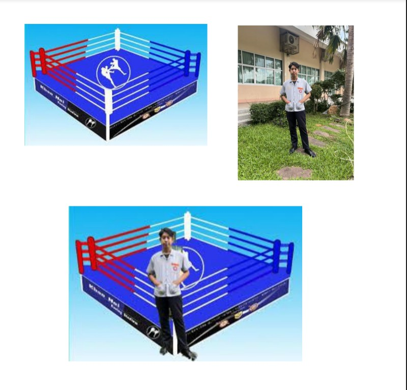
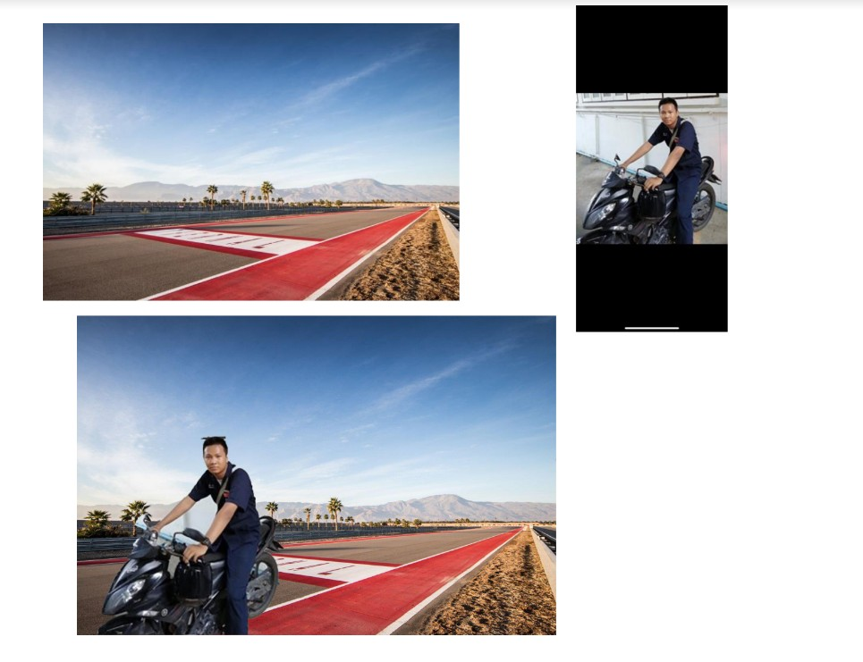
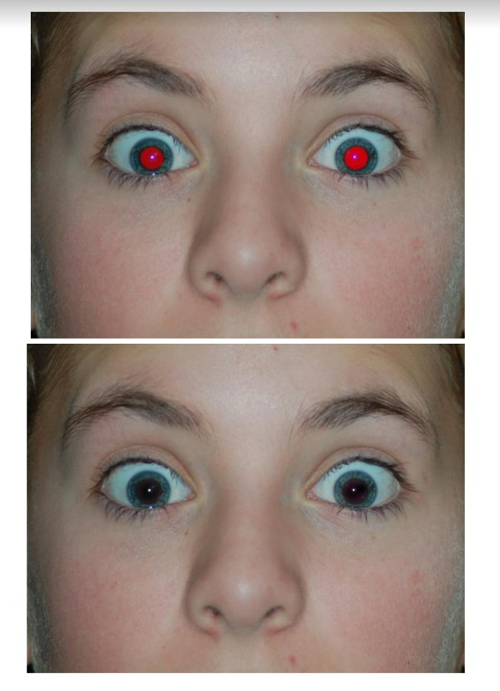
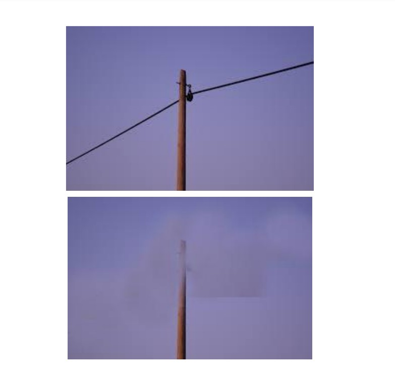
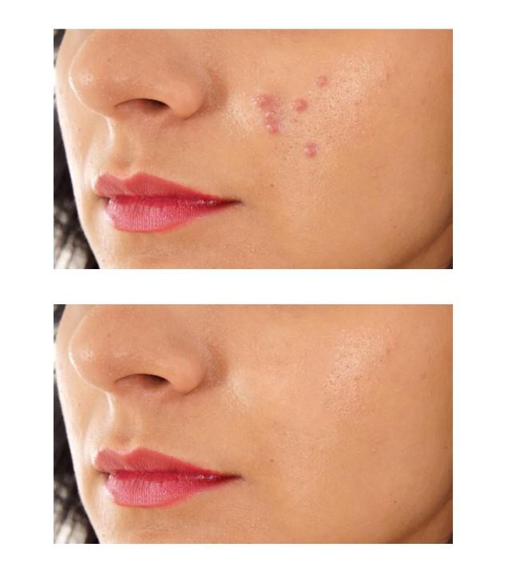

ยินดีต้อนรับ
หน้าแรก
รวมงานที่1-3
รวมเทคนิคที่1-20
รวมเทคนิคที่21-35
งานเทคนิคที่ 1 การนำวัตถุออกจากฉากหลัง (Magic Wand Tool)

งานเทคนิคที่ 2 การย้ายวัตถุไปยังฉากหลังอื่น ๆ (Quick Selection Tool)

งานเทคนิคที่ 3 การกำจัดตาแดงบนภาพถ่าย (Red Eye Tool)

งานเทคนิคที่ 4 การกำจัดสิ่งรุงรังบนภาพออกไป (Clone Stamp Tool)

งานเทคนิคที่ 5 การลบริ้วรอย (Patch Tool)

งานเทคนิคที่ 6 การปรับฉากหลังให้เบลอ
งานเทคนิคที่ 7 การบิดภาพเพื่อนำไปวางบนวัตถุ
งานเทคนิคที่ 8 การบิดโครงร่าง
งานเทคนิคที่ 9 การปรับสีท้องฟ้า
งานเทคนิคที่ 10 การปรับแนวเส้นที่ลาดเอียงให้ตรง
งานเทคนิคที่ 11 การสร้างภาพไฟฟ้าช็อต
งานเทคนิคที่ 12 การสร้างภาพละออง Fairy
งานเทคนิคที่ 13 การสร้างภาพฝนตก
งานเทคนิคที่ 14 การสร้างโลโก้ด้วย Shape
งานเทคนิคที่ 15 การสร้างภาพกระดาษปลิว
งานเทคนิคที่ 16 การสร้างตัวอักษรแบบรัศรี
งานเทคนิคที่ 17 การสร้างตัวอักษรน้ำแข็ง
งานเทคนิคที่ 18 การสร้างตัวอักษรตามเส้น Path
งานเทคนิคที่ 19 การสร้างตัวอักษรวงกลม
งานเทคนิคที่ 20 การสร้างตัวอักษาแบบการ์ตูน